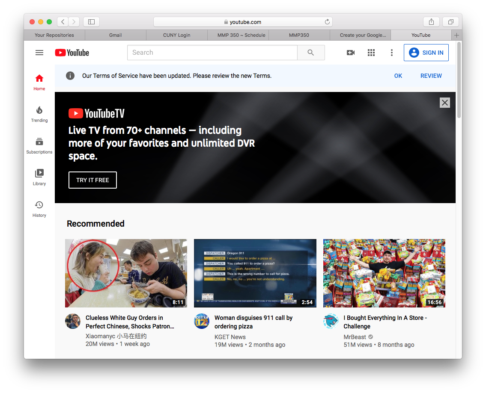

YouTube is an American video-sharing platform headquartered in San Bruno, California. Three former PayPal employees—Chad Hurley, Steve Chen, and Jawed Karim—created the service in February 2005. Google bought the site in November 2006 for US$1.65 billion; YouTube now operates as one of Google's subsidiaries. YouTube allows users to upload, view, rate, share, add to playlists, report, comment on videos, and subscribe to other users. It offers a wide variety of user-generated and corporate media videos. Available content includes video clips, TV show clips, music videos, short and documentary films, audio recordings, movie trailers, live streams, and other content such as video blogging, short original videos, and educational videos. Most content on YouTube is uploaded by individuals, but media corporations including CBS, the BBC, Vevo, and Hulu offer some of their material via YouTube as part of the YouTube partnership program. Unregistered users can only watch videos on the site, while registered users are permitted to upload an unlimited number of videos and add comments to videos. Videos deemed potentially inappropriate are available only to registered users affirming themselves to be at least 18 years old.
Creating an account on YouTube is very simple.
Here are the steps:
YouTube belongs to Google. So the first step is head onto the sign up/ sign in button on the top right corner of the YouTube homepage.One of the many benefits to registering for a free YouTube account is that it is relatively easy to do. When you signup for a free YouTube account, you need to provide a little bit of information about yourself. This information includes your name, the country that you live in, your zip code, your date of birth, as well as your gender. You will also need to create a YouTube user name for yourself, as well as a password. Your password and user name will be used to log into your account. Signing up for a YouTube account should take only a few minutes of your time, at the most. You can also directly head to Google.com.
Now that you have reached the sign up page, start creating your account. G-mail will require the following pieces of information; your full name, age, address,spoken languages, a few security questions, a username and finally a password. Remeber to write a stong password!
Congrats! You made it through the annoying part. Now you can head onto Youtube!
Once you have created a free YouTube account for yourself, you can then begin to enjoy the many other benefits of having a YouTube account. One of those benefits is the ability to rate videos that you watch, as well as leave comments. As it was previously mentioned, you can watch videos on YouTube without having a YouTube account, but you cannot rate videos or leave comments for the video owner. Rating YouTube videos gives other YouTube users an idea as to which videos are high in demand, which, in turn, can lead to more of your favorite videos being found on the YouTube site. That is just one of the many reasons why you should not only signup for a free YouTube account, but also rate YouTube that you watch or leave comments. In addition to being able to rate or review videos, registering for a free YouTube account also gives you the option of sharing your videos with other internet users. Non-registered YouTube members are unable to upload and share any videos that they may have made. If you have never shared videos online, you may want to think about doing so, as they are fun to make. Many of the videos currently found on YouTube are comedy skits, video blogs, and candid videos. All you really need to have is a video recording device, such as a cell phone, webcam, or camcorder, and a movie editing software program, which now comes standard on most computers. As it was previously stated, creating a membership account with YouTube is free and it should only take a few minutes of your time. If you enjoy using the internet as a source of entertainment, you will not only want to visit YouTube, but you will also want to take the few minutes needed to register for a free account. In the end, you will likely be pleased with your decision to do so.